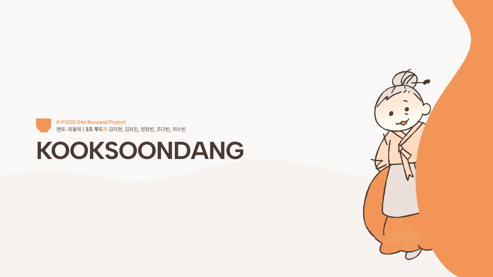

Kooksoondang

Overview
100년 전통주 브랜드 국순당의 웹사이트는 2009년에 멈춰 있어 모바일에서도 해외에서도 사용자에게 닿지 못했습니다. 저희는 'Tradition Meets Interactive Experience'를 콘셉트로 주막 문화를 유쾌한 2D 손그림 캐릭터로 풀어내고, 모든 조합에 결과를 설계한 페어링 게임과 언어 전환에 대응하는 컴포넌트를 더해 7개 페이지를 반응형으로 구현하고 배포했습니다.
팀으로 작업하며 사소한 것까지 처음부터 세세하게 정해야 기획이 흔들리지 않는다는 것을 배웠고, 일정이 밀리지 않게 팀 프로젝트를 이끄는 방식을 익혔습니다. 다만 시간이 부족해 기획한 내용을 모두 담지 못했고 페이지 간 디자인 무드를 완전히 통일하지 못한 점이 아쉬워, 제품 상세·테스트 페이지를 다시 디자인하고 반응형을 완성하는 디벨롭을 이어가고자 합니다.
Info
- Period
- 2026. 5 - 2026. 8
- Team
- 5인 프로젝트
- Role
- UX 기획, UI 디자인, 퍼블리싱
- Contribution
- 기획 30% 디자인 40% 일러스트 85% 개발 20%
- Tools
- Figma · Adobe Illustrator · Clip Studio · VS Code · Claude Code
- Link
- Project Link↗